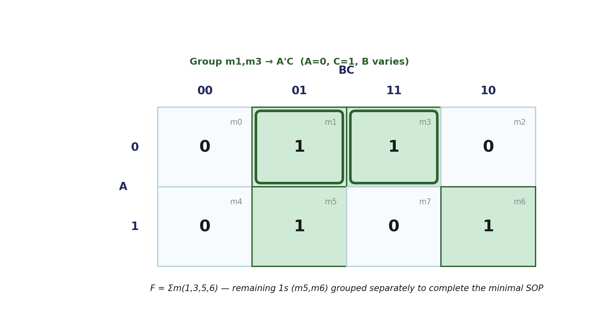
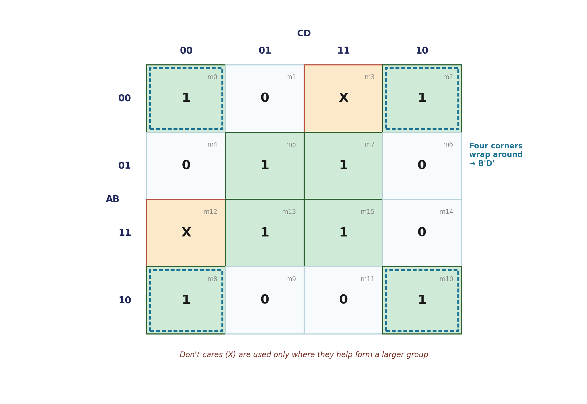

The canonical SOP form from the last page is guaranteed correct but almost never minimal — and simplifying it by hand with algebra alone is easy to get wrong or stop too early. The Karnaugh map (K-map) turns that same simplification into a visual, reliable procedure. It also brings back an old friend: the Gray-code adjacency from the Binary Codes page turns out to be exactly what makes a K-map work.
A K-map arranges every row of a truth table into a grid so that physically adjacent cells differ in exactly one variable. That's not a coincidence — it's a deliberate reuse of Gray code. K-map row and column headers are always written in Gray-code order (00, 01, 11, 10), never plain binary counting order (00, 01, 10, 11), specifically so that neighboring cells are always one bit-flip apart, both across and down, and even wrapping around the map's edges.
Two cells that differ in exactly one variable can always be combined algebraically — their differing variable cancels out. A K-map lets you see which cells qualify for this instead of hunting for the right algebraic step.
Take F(A,B,C) = Σm(1,3,5,6) — the exact function written out as canonical SOP on the Digital Logic Gates page:

Grouping m1 and m3 (adjacent across the BC = 01/11 columns, in row A=0) eliminates the variable that differs between them — B — leaving the term A′C. The remaining 1s (m5, m6) get grouped separately to complete the minimal expression, shorter than the four-term canonical SOP you started with.

The four corner cells (m0, m2, m8, m10) are all mutually adjacent through wraparound — the map's left edge connects to its right edge, and its top edge connects to its bottom edge. Grouped together, all four simplify to the single term B′D′. Don't-care cells are folded into a group only where doing so lets it grow larger; forcing every don't-care to count as a 1 can produce an incorrect, over-general function.
| Map size | Header order | Cells per group |
|---|---|---|
| 2-variable | 0, 1 | 1, 2, 4 |
| 3-variable | 00, 01, 11, 10 | 1, 2, 4, 8 |
| 4-variable | 00, 01, 11, 10 (both axes) | 1, 2, 4, 8, 16 |
With Binary Codes, Binary Storage & Registers, Binary Logic, Digital Logic Gates, and K-Map Representation complete, this closes out Boolean Algebra & Logic Gates. Next: Digital Computers — the block diagram, and the actual distinction between computer organization and computer architecture.